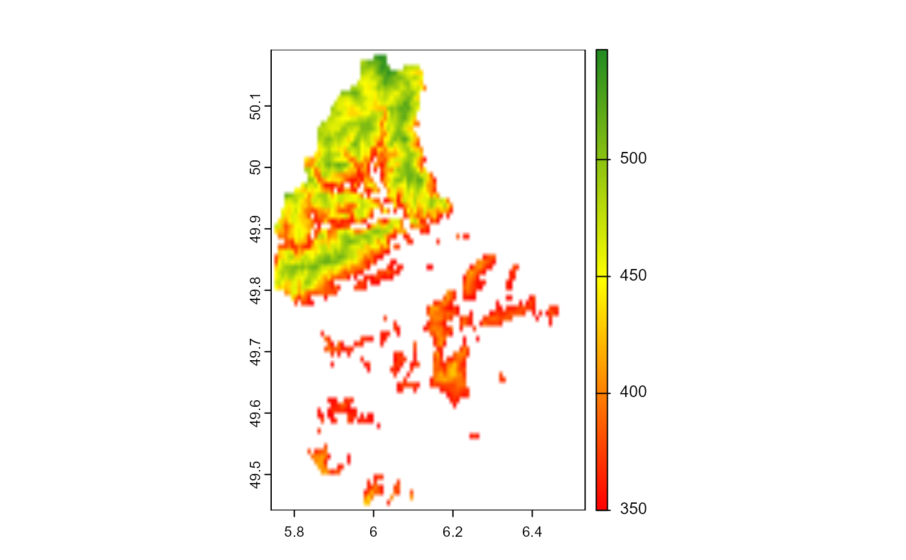

Segment a SpatRaster using a computed image index. By default, values
greater than threshold are kept in the mask.
Usage
mosaic_segment(
mosaic,
index = "R",
r = 3,
g = 2,
b = 1,
re = NA,
nir = NA,
swir = NA,
tir = NA,
threshold = "Otsu",
invert = FALSE,
return = c("mosaic", "mask")
)Arguments
- mosaic
A mosaic of class
SpatRaster, generally imported withmosaic_input().- index
A character value (or a vector of characters) specifying the target mode for conversion to a binary image. Use
pliman_indexes_rgb()andpliman_indexes_me()to see the available RGB and multispectral indexes, respectively. Users can also calculate their own index usingR, G, B, RE, NIR, SWIR, and TIRbands (eg.,index = "R+B/G") or using the names of the mosaic's layers (ex., "(band_1 + band_2) / 2").- r, g, b, re, nir, swir, tir
The red, green, blue, red-edge, near-infrared, shortwave Infrared, and thermal infrared bands of the image, respectively. By default, the function assumes a BGR as input (b = 1, g = 2, r = 3). If a multispectral image is provided up to seven bands can be used to compute built-in indexes. There are no limitation of band numbers if the index is computed using the band name.
- threshold
By default (threshold = "Otsu"), a threshold value based on Otsu's method is used to reduce the grayscale image to a binary image. If a numeric value is provided, this value will be used as a threshold.
- invert
Logical, indicating whether to invert the mask. Defaults to
FALSE, i.e., pixels with intensity greater than the threshold values are selected.- return
The output of the function. Either 'mosaic' (the segmented mosaic), or 'mask' (the binary mask).
Examples
library(pliman)
mosaic <- mosaic_input(system.file("ex/elev.tif", package="terra"))
#> Warning: The current raster is in the lat/lon coordinate system, which may result in processing errors when trying to segment individuals in the `mosaic_analyze()` function. It is highly suggested to reproject the raster using mosaic_project() with EPSG:32632
#> class : SpatRaster
#> dimensions : 90, 95, 1 (nrow, ncol, nlyr)
#> resolution : 0.008333333, 0.008333333 (x, y)
#> extent : 5.741667, 6.533333, 49.44167, 50.19167 (xmin, xmax, ymin, ymax)
#> coord. ref. : lon/lat WGS 84 (EPSG:4326)
#> source : elev.tif
#> name : elevation
#> min value : 141
#> max value : 547
seg <-
mosaic_segment(mosaic,
index = "elevation",
threshold = 350)
#> Index 'elevation' is not available. Trying to compute your own index.
mosaic_plot(seg)
